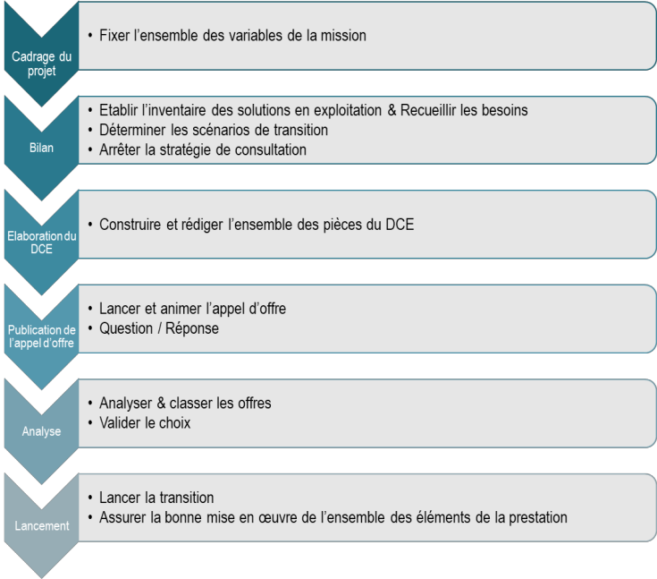

Que ce soit au sein de ses centres de services ou en délégation de moyens, Neo Business Conseil met à disposition les moyens techniques et humains d’administration et d’exploitation des infrastructures. Nos techniciens et experts apportent aux projets, ou en support, leur maîtrise des environnements techniques (environnements virtualisés, centralisés ou distribués, systèmes, bases de données, réseaux et télécoms). Ces ressources peuvent intervenir sur les trois taches que constitue une exploitation classique
Cette mission de conseil intrinsèque du métier de consultant consiste à décrire une situation ou un problème, à rappeler les résultats qui en étaient espérés, à faire une analyse détaillée des divergences et très souvent à proposer des scénarios de convergence ou de correction de trajectoires. Dans certains cas, nos clients nous demandent de piloter les mises en œuvre des plans d’actions qui en sont issus.
Nous accompagnons nos clients dans toutes ou parties des phases induites par le choix de nouvelles solutions, d’applications logicielles, de solutions d’infrastructures, de chaines de production industrielle, de processus de gestion, de marchés publics, ...
Il s’agit de formaliser la valeur ajoutée attendue du projet, l’apport pour le client et pour son entreprise, les bénéfices attendus. La définition du besoin réel de l’entreprise est essentielle par rapport à sa stratégie, les réglementations, de nouvelles obligations légales. Les décideurs devront également clarifier le bon ROI, en fonction de l’objectif recherché. Le cadrage constitue également un enjeu majeur, dans la mesure où il sera déterminant dans le processus d’obtention des moyens nécessaires à la réalisation du projet : budget, ressources, délais...). Les points d’attentions plus particuliers pourront être ;
Un Schéma Directeur doit permettre de décrire de manière pragmatique le « plan d’action » de l’entreprise en vue de mettre en œuvre des solutions organisationnelles, fonctionnelles et techniques alignées avec la stratégie de l’entreprise. Le succès de cette démarche dépend de l’anticipation des contraintes de plannings et de budgets, ainsi que des moyens disponibles.
Le fonctionnement en mode agile a entraîné une mutation du Maintien en Condition Opérationnelle. Time-to-market et organisation DevOps ont renforcé cette nécessité d’adaptation. Aujourd’hui, il s’agit d’alléger les processus et d’accélérer la cadence de mise en production des applications, tout en maintenant un haut niveau de qualité et de sécurité des applications Le MCO vise à maintenir disponibles les applications clients, à les fiabiliser et à en améliorer les performances. Sans oublier d’assurer l’évolutivité de ces applications par rapport à l’écosystème informatique.